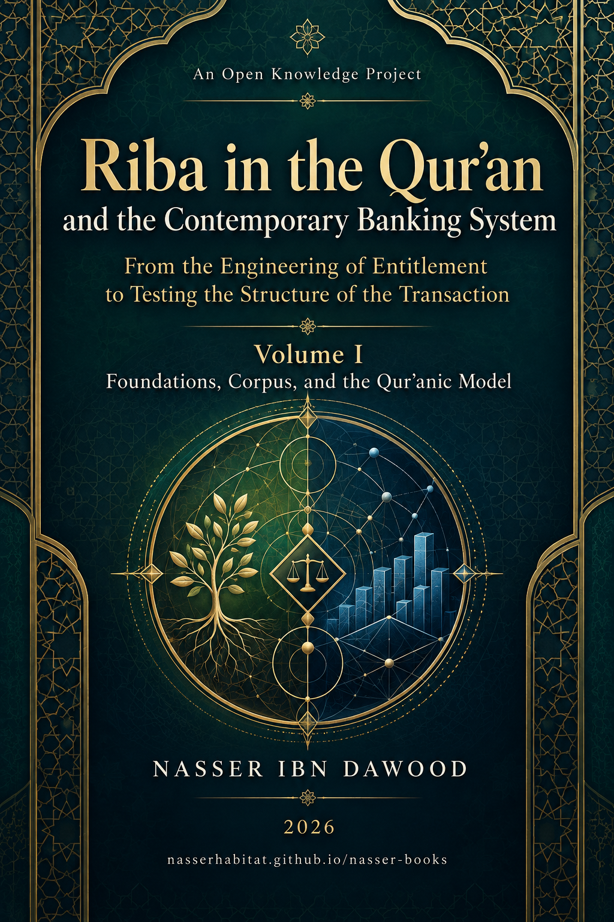

Nasser Ibn Dawood

Text extracted from the author-supplied Word edition; consult the original source.
Preparing the reader…
Riba in the Qur’an and the Contemporary Banking System
From the Engineering of Entitlement to Testing the Structure of the Transaction
Volume I — Foundations, Method, and the Qur’anic Audit Model
A Condensed Conceptual English Adaptation
Nasser Ibn Dawood
2026
nasserhabitat.github.io/nasser-books/
I. The Global Knowledge Manifesto
Knowledge is a universal right. The author firmly believes that wisdom should not be locked behind paywalls or language barriers.
Global Access Policy: All books in this library are available for free in multiple digital formats (PDF, HTML, DOCX, TXT).
The Digital Library: As of early 2026, the collection hosts 68 volumes (34 in Arabic and 34 in English), fully optimized for AI-assisted research and digital archiving.
Official Platforms: Main Website: nasserhabitat.github.io/nasser-books/
GitHub: nasserhabitat/nasser-books
◆ ◆ ◆
II. Translator’s Note: The Bridge of Meaning
This English edition is a condensed conceptual adaptation. It is not a word-for-word translation, but rather an "extraction of essence." It presents the core philosophical framework in accessible English, omitting the exhaustive linguistic debates and classical references found in the original Arabic text.
For the academic researcher: The original Arabic version remains the primary source for comprehensive linguistic analysis, detailed exegesis (Tafsir), and the complete bibliography.
A Note on Terminology
The Arabic term riba is deliberately retained rather than automatically replaced by the modern English word interest. The entire methodological purpose of Volume I is to avoid importing a ready-made definition into the Qur’anic text before the textual and structural tests have been completed. English terms such as debt, increase, term, ownership, harm, injustice, sale, profit, and entitlement therefore function as analytic variables or candidate explanations unless the text and the stated test establish a stronger rank.
The same rule applies to the book’s methodological labels. OPEN means that a question has not been closed by sufficient evidence. RESISTED records that a particular formulation failed a stated test of sufficiency, necessity, exclusivity, or identity. CLOSED is always local to the scope that was actually closed. UNKNOWN concerns missing case data and is not the same thing as an open research question.
Condensed Contents
1. Why the Question of Riba Must Be Reopened Methodologically
2. The Research Discipline: Text, Observation, Hypothesis, Test, and Claim Rank
3. Part One — Building the Corpus and the Testing Method
4. Part Two — Why the Familiar Definitions Are Not Sufficient
5. Part Three — Sale and Riba: Separation Without a Sealed Separator
6. Part Four — The Engineering of Entitlement and the Balance of Rights
7. Part Five — The Mathani Network: Riba, Charity, Zakat, Mahq, and Divine Reference
8. Part Six — From Definition-Seeking to a Qur’anic Audit Model
9. Part Seven — From the Qur’anic Model to Contemporary Transaction Analysis
10. What Volume I Establishes, What It Resists, and What It Leaves Open
11. Bridge to Volume II
12. Compact Glossary
1. Why the Question of Riba Must Be Reopened Methodologically
Volume I does not reopen the subject of riba in order to deny the Qur’an’s explicit prohibition, nor does it begin by asking whether a modern bank, loan, or product is permissible or prohibited. It reopens an earlier question: how does the Qur’an itself construct the semantic and structural field of riba, and how far may a researcher move from that textual field toward a contemporary transaction without silently importing a prior conclusion?
This distinction is central. A religious or legal tradition may possess a well-known answer, yet the path by which each element of that answer is attributed to the Qur’an may contain different levels of evidence. A ruling can be explicit while the explanatory model surrounding it is interpretive. A later juristic category can be valuable without becoming identical to the Qur’anic term. An economic explanation can illuminate consequences without constituting the lexical definition. Volume I therefore separates the existence of the prohibition from the scientific problem of defining the concept and testing its boundaries.
The book’s governing concern is epistemic discipline. The Qur’anic text is one level. Observation of recurring patterns is another. Induction, relation-mapping, hypothesis formation, resistant testing, provisional findings, and operational models belong to later levels. Proximity on the page does not collapse these levels. A hypothesis does not become a law because it sounds persuasive. A structural variable does not become a Qur’anic category because it proved useful in a model. A later volume does not become evidence for a new corpus simply because it belongs to the same research project.
The guiding research path may be summarized as: text → observation and corpus induction → relations → hypothesis → testing → resistant cases → finding or law if warranted → model → application. The book repeatedly returns to this sequence because the main danger is not lack of information but premature promotion: moving from an observed feature to a total definition before testing whether that feature is necessary, sufficient, exclusive, or merely adjacent.
This method also changes the practical question. Instead of asking first, “What is this contract called?” the book learns to ask: What moved? Who owned it? What right arose? Why did it arise? When did it arise? What is the role of time? What is the object of the claim? What limits the creditor’s right? What right remains to the counterparty? These questions prepare the transition from a Qur’anic semantic investigation to a structural audit of modern finance without pretending that the audit itself has already become a final classifier.